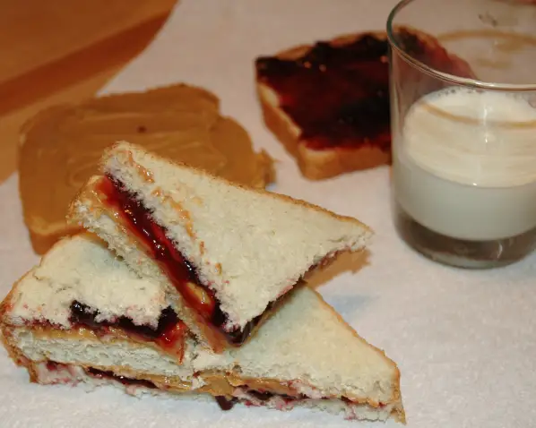

Nut Butter and Jam

Ingredients:
- Smooth Peanut butter
- Any jam or preserves
- Sourdough Bread
Directions:
- Cut two slices of bread from the loaf and toast.
- Spread one side with your jam or preserves, spread the other side with Peanut butter
- Close the sandwich and enjoy.